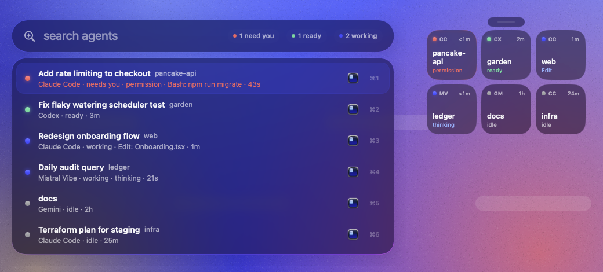
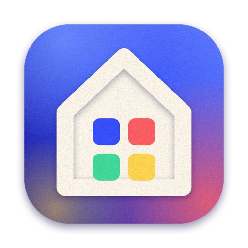

zero setup
Start agents however you like. barn finds them in the process table and reads their own session files, so it always knows which are working, waiting or done.
for people running too many agents at once
barn lives in your menu bar and watches every AI coding agent on your Mac. When one needs you, ⌃⌥Space takes you to its exact terminal tab.
free & open source · macOS 14+ · prettiest on macOS 26 · nothing leaves your Mac

Start agents however you like. barn finds them in the process table and reads their own session files, so it always knows which are working, waiting or done.
Not just the app. barn picks the right Ghostty split, iTerm or Terminal tab, VS Code window, or tmux pane, then brings it to the front.
When an agent hits a permission prompt or asks a question, you get a notification. Click it and you're there. No more agents waiting on you without you knowing.
A Spotlight-style switcher for your agents. Type to filter, press ↵, and you're in the right tab. The most urgent agents sort to the top, and ⌘1–9 jumps straight to one. Every shortcut can be changed in settings.
Turn on the floating deck (⌃⌥D) for a strip of glass tiles that stays on top. It's a glanceable status board on every desktop.
Detected automatically. exact agents report their own state. hook agents become exact with one click in settings. Everything else is tracked by activity, and you can add your own.
Anything can tell barn what it's doing. Point a hook at barn hook, or write one small JSON file from any script.
# any agent's hook config
barn hook codex
# …or from any script
echo '{"state":"waiting","detail":"approve deploy"}' \
> ~/.barn/status/$PPID.jsonNo account, no telemetry, no network calls. barn reads the process table and your agents' local files, and that's all. The source is open, so you can check.
No. Run them however you already do, in any terminal or editor. barn notices them on its own, usually within a second.
To bring the right tab to the front, barn uses Apple Events, the same way Raycast or Alfred do. macOS asks once per terminal app. barn only uses that permission to focus windows and tabs.
Ghostty, iTerm2 and Terminal.app all get exact tab or split focus, and tmux gets exact pane focus. VS Code, Cursor, Windsurf and Zed get the right window. Anything else gets activated.
Add it in settings → agents → your own, with its process name. If it has hooks, point them at barn hook <name> for exact state.
Nothing. barn is free and open source. It uses about as much CPU as a clock widget.
